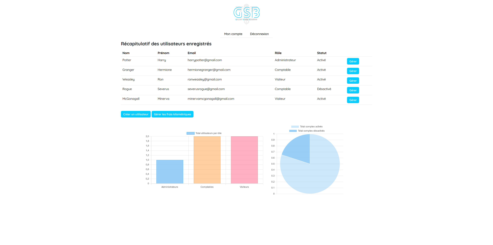
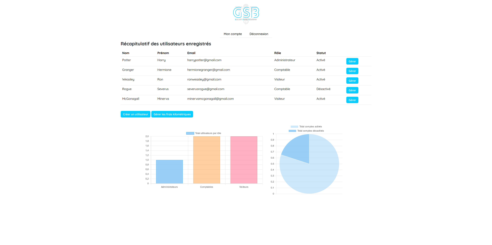

GSB - WEB
Contexte
Dans le cadre du projet personnel encadré annuel de deuxième année de BTS SIO, j'ai eu l'opportunité de travailler sur le développement d'une application web et mobile de gestion de fiches de frais pour l'entreprise fictive Galaxy-Swiss Bourdin. Spécialisé dans le milieu médical, GSB est issu de la fusion entre le géant américain Galaxy (travaillant dans le secteur des maladies virales, dont le SIDA et les hépatites) et le conglomérat européen Swiss Bourdin (travaillant sur des médicaments plus conventionnels), lui-même déjà union de trois petits laboratoires. Une conséquence de cette fusion est la recherche d'une optimisation de l’activité du groupe ainsi constitué en réalisant des économies d’échelle dans la production et la distribution de médicaments.
Après deux années de réorganisations internes, tant au niveau du personnel que du fonctionnement administratif, l'entreprise souhaite moderniser l'activité de visite médicale en uniformisant la gestion des fiches de frais grâce au développement d'une application web et mobile capable de répondre à ce besoin.
Technologies
- Environnements : MacOS, Windows
- Gestion de projet : Trello
- Interface d'administration de bases de données : PHPMyAdmin
- Langages : CSS, HTML, JS, PHP, SQL
- Librairies : Bootstrap, ChartJS
- Système de gestion de bases de données : MySQL
- Versioning : Git, GitHub
- Éditeur de texte : Visual Studio
Côté back-end, l'application a été développée en langage PHP et a nécessité la création et la gestion d'une base de données avec PHPMyAdmin et MySQL et la gestion des requêtes avec SQL.
Côté front-end, l'interface a été développée avec PHP, HTML, CSS, JavaScript, et les librairies ChartJS, pour l'affichage des représentations graphiques des statistiques, et Bootstrap pour le design.
 

Fonctionnement
Pour accéder à l'application web de gestion de fiches de frais, une connexion est requise. Les
identifiants (adresse e-mail et mot de passe) auront été préalablement enregistrés dans la base
de données par l'administrateur, responsable de la gestion des données.
L'application gère trois types d'utilisateurs à la fois différents et complémentaires : le
visiteur médical, le comptable, et l'administrateur.
Lorsque l'utilisateur entre ses identifiants, celui-ci est redirigé vers son
portail respectif. Depuis cette page, il peut visualiser et interargir avec un certain nombre
d'informations.
Le visiteur médical peut visualiser toutes ses fiches de frais avec leurs informations (période
de
référence, date de création, nombre de nuitées, montant total, montant total remboursé par
l'entreprise, montant total à charge et statut du traitement). Il peut également visualiser ses
statistiques, à savoir le montant total remboursé et à charge pour chaque catégorie (transport,
hébergement, alimentation et autres) et le montant total remboursé et à charge concernant
l'ensemble de ses
fiches. En tant que visiteur, il peut consulter les détails de chacune de
ses fiches de frais et, selon le statut du traitement, les modifier ou les supprimer. Lorsqu'il
consulte sa fiche, il a accès aux détails des dépenses et justificatifs fournis concernant
chaque catégorie.
Le comptable peut, quant à lui, visualiser les fiches de frais de tous les visiteurs et les
statistiques concernant les dépenses totales par catégorie et pour l'ensemble des fiches.
L'utilisateur peut aussi consulter le tableau des frais kilométriques de l'année en cours. En
tant que comptable, il peut consulter chaque fiche de frais et, selon le statut du
traitement, les traiter lui-même en vérifiant la concordance des informations et des
justificatifs fournis par le visiteur avec le budget fixé par l'entreprise pour chaque
catégorie. Quelle que soit la raison, il peut refuser ou valider le remboursement des
frais.
Enfin, l'administrateur peut visualiser l'ensemble des utilisateurs enregistrés sur la
plateforme et les statistiques concernant le nombre total d'utilisateurs par rôle ou de comptes
activés ou désactivés. L'utilisateur peut aussi consulter et modifier le
tableau des frais kilométriques de l'année en cours. En tant qu'administrateur, ce dernier peut
consulter les informations de chaque utilisateur, modifier leurs informations respectives et
désactiver ou réactiver leur compte.